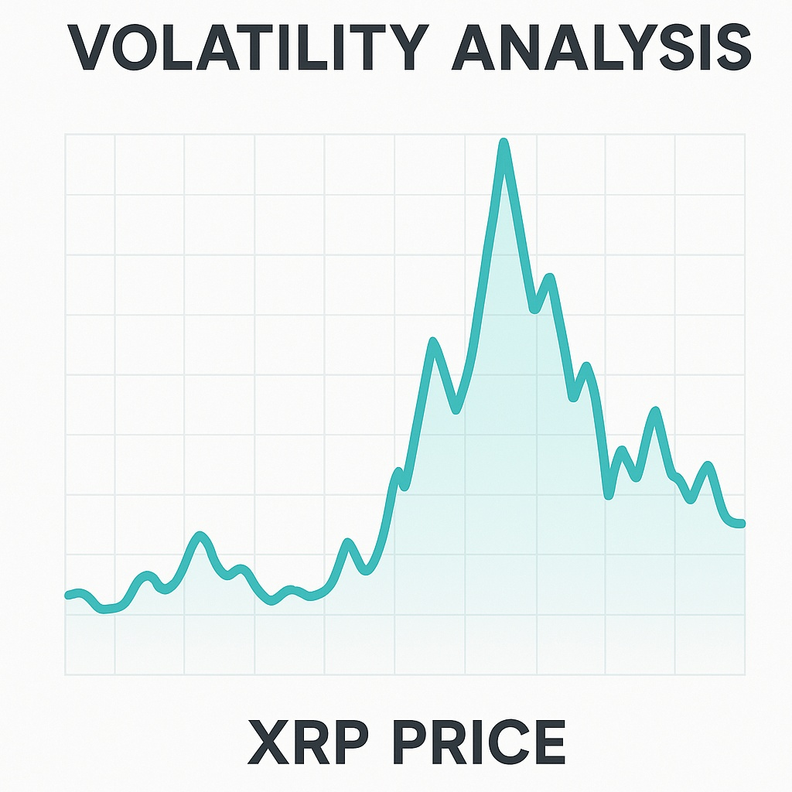

XRP (Ripple) Price Forecast for the End of 2025: Comprehensive Analysis
The material in this article is provided for educational purposes only and should not be considered financial advice. Cryptocurrency investments carry high risks.
Introduction
XRP is the native token of the XRP Ledger (XRPL), created by Ripple in 2012 to accelerate cross-border payments. Its transaction speed (~3–5 seconds) and low fees (~$0.00001) make XRP an ideal “bridge currency” for financial institutions. RippleNet, a network of 200+ banks and providers (Santander, BBVA, SBI), uses Ripple’s technology, although direct XRP usage remains limited. XRP’s maximum supply is 100 billion, with ~59.48 billion in circulation, and the rest held in Ripple escrow. coincodex.com

Current Market Situation
As of August 29, 2025, XRP trades around $3.00 (range $2.88–3.03), with a market cap of ~$180B and daily trading volume of ~$6.4B. Circulating supply is ~59.48B XRP. Over the past week, price declined ~2%, with daily volatility at 1–3%. Technical indicators: the 50-day MA (~$2.95) is above the 200-day MA (~$2.49), but the price is below the 50-day, indicating selling pressure. RSI (14) ~40–45 (weak demand). Support: $2.75–2.80; resistance: $3.00–3.20, then $3.66 (ATH). coincodex.com
| Metric | Value |
|---|---|
| XRP Price | ≈$3.00 |
| Market Cap | ~$180B |
| Circulating Supply | 59.48B XRP |
| 24h Trading Volume | ~$6.4B |
| 24h Price Change | -0.67% |
| 7d Price Change | -2.05% |
| 50-day MA | ≈$2.95 |
| 200-day MA | ≈$2.49 |
| RSI (14) | ≈42 |
| Support | ≈$2.75–2.80 |
| Resistance | ≈$3.33–3.66 |
Price Forecast for the End of 2025
Forecasts for XRP in December 2025 vary:
- Bearish Scenario: Price may fall to $1.3–$2.5 if regulatory risks intensify or the market corrects. WalletInvestor projects ~$1.35, Gate.io ~$2.14. coincodex.com, gate.io
- Base Scenario: Price in the $2.5–$3.5 range. CoinCodex expects $2.95–$2.99, Changelly ~$2.72 average, DigitalCoinPrice ~$3.51. coincodex.com, changelly.com
- Bullish Scenario: Price could reach $5–$6 if ETFs succeed and institutions adopt XRP. Bitget projects ~$4.44, Standard Chartered up to $5.50. bitget.com
Consensus range: $2.5–$3.5, with growth potential to $5+ in a bullish case. changelly.com, coincodex.com
Growth Drivers
- Cross-border payments: XRP enables fast (~3–5 sec) and cheap (~$0.00001) transfers, serving as a bridge currency for banks. coincodex.com
- RippleNet: A network of 200+ participants (Santander, BBVA, SBI) increases XRP demand potential. coincodex.com
- Institutional adoption: ETFs (ProShares UXRP, ~$1.2B in a month) and On-Demand Liquidity (ODL, $1.3T in Q2 2025) boost utility. The RLUSD stablecoin also supports demand.
- Legal victories: Settlement of Ripple vs SEC (Aug 2025, $125M) and XRP’s classification as a commodity improve investor confidence.
- Partnerships: Collaborations with SBI, MoneyGram, and others expand XRP’s use in payments and asset tokenization.
Risks and Limiting Factors
- Regulatory threats: New restrictions in other jurisdictions may reduce XRP demand.
- Competition: CBDCs, Stellar, Celo, and stablecoins (USDT, USDC) threaten XRP’s role in payments.
- Volatility: High market volatility may trigger sharp price drops in bearish phases.
- Ownership concentration: Large holders and Ripple escrow (~40% of tokens) pose dump risks, as seen with $1.9B XRP sales in summer 2025.
Technical Analysis
XRP/USDT forms a symmetrical triangle: resistance ~$3.00–3.20, support ~$2.95–2.97. Price is below the 50-day MA (~$2.94), RSI ~40, MACD bearish. Trading volume moderate (~$6–7B/day). A break below $2.76 (100-day EMA) could lead to $2.50, while consolidation above $3.00–3.20 opens the path to $3.66–3.75. Bullish scenario requires increased buying volume.
Conclusion
By the end of 2025, XRP will likely trade in the $2.5–$3.5 range, with a base case around $2.7–$3.0. The bearish case suggests a drop to $1.3–$2.0, while the bullish case implies growth to $5–$6 if ETFs succeed and institutions adopt XRP. Growth drivers: RippleNet, ODL ($1.3T in Q2 2025), SEC settlement, and partnerships. Risks: regulatory restrictions, competition, and volatility. Investors should monitor ETF inflows, whale activity, and $3.00/$2.75 levels. For more information, visit coincodex.com and bitget.com.